Vaikkakin käytettävissä olevien funktioiden määrä keskitetyssä hallinnassa on suuri, hallinta voidaan toteuttaa tehokkaasti pienelläkin määrällä perustason funktioita sekä komentoja
Käytetyimmät funktiot olivat:
case file package exec augeas service pam::changeparm service Valitsin postgreSQL- työkalun, jota käytetään relaatiotietokantojen hallinnointiin. Aloitin siis poistamalla edellisen pakettiasennuksen (sudo apt-get purge postgresql), ja suorittamalla rutiinipäivitykset (sudo apt-get update && sudo apt-get upgrade -y)
Sitten asennus uudestaan (sudo apt-get install postgresql -y), käyttöönotto heti (sudo systemctl start postgresql --now) sekä tarkistus (sudo systemctl status postgresql)
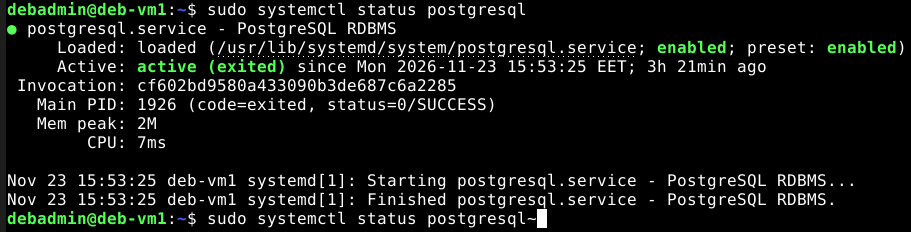
Lopuksi noudattaen ohjeistusta (Karvinen 2016: "Install PostgreSQL on Ubuntu" & "PostgreSQL Install and One Table Database") sekä hieman poiketen siitä, luotiin käyttäjä (sudo -u postgres createuser debadmin) sekä testitietokanta (sudo -u postgres createdb -O debadmin debadmin), joka määriteltiin käyttäjän "debadmin" omistukseen
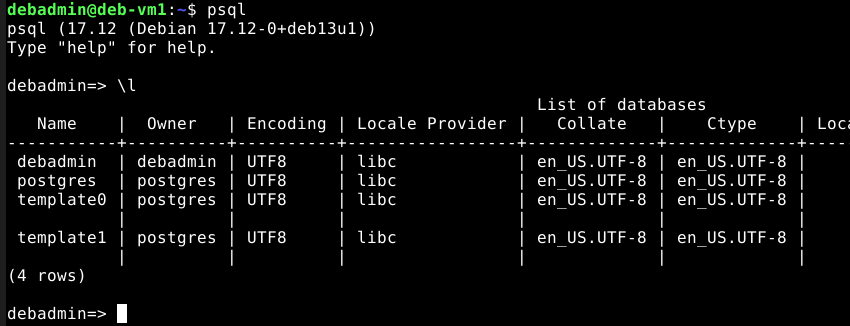
Tarkoitus oli toteuttaa sama lopputulos Ansiblella, joten aloitin:
Järjestämällä hostit ryhmiin (hosts.ini)
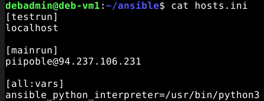
Sitten muokkaamalla roolit kuntoon (site.yml)
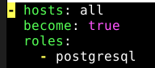
Luomalla uuden tiedoston päivityksien asentamiselle (touch /home/debadmin/ansible/update.yml)
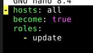
Luodaan hakemistot (mkdir -p /home/debadmin/ansible/roles/postgresql/tasks/ /home/debadmin/ansible/roles/update/tasks/)
sekä tehtävätiedostot (touch roles/postgresql/tasks/main.yml roles/update/tasks/main.yml)
Ja tiedostoihin seuraavanlaiset tehtävät:
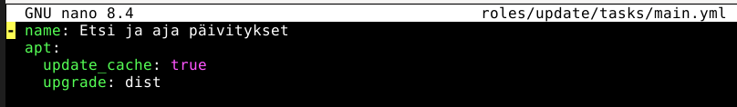
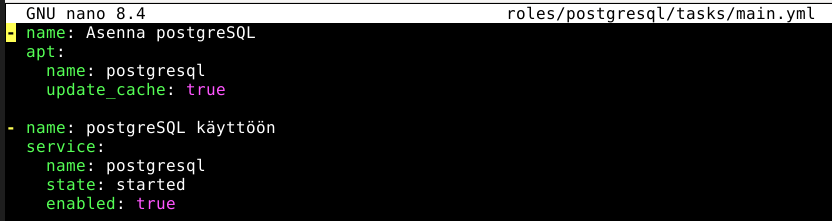
Sitten koeajo päivityksien hakemisesta sekä asentamisesta "testrun" - ryhmän hosteihin (ansible-playbook update.yml -l testrun), joka näytti toimivan.
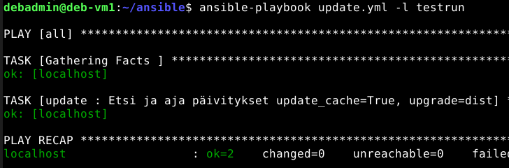
Ajetaan sama kahdesti uudestaan, tällä kertaa kaikille listatuille hosteille (ansible-playbook update.yml)
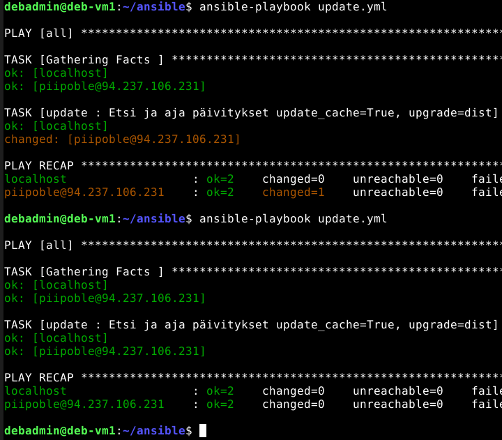
Sitten tosiaan vielä se varsinainen asennus (ansible-playbook site.yml -l testrun), joka onnistui idempotenttina
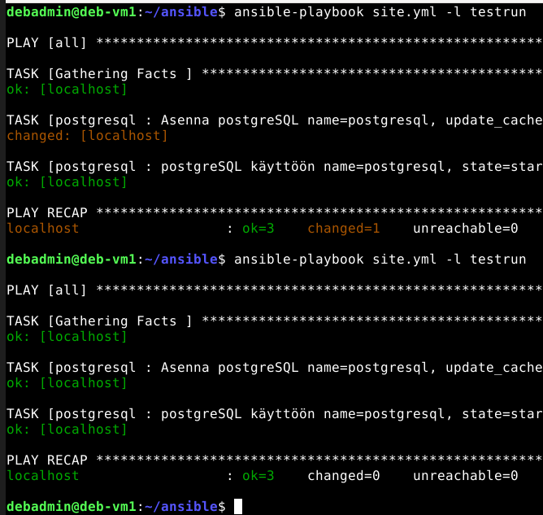
Sitten hakemistot tiedostoille sekä handler-tehtäville (mkdir -p roles/postgresql/files roles/postgresql/handlers) ja sinne tiedostot (touch roles/postgresql/handlers/main.yml roles/postgresql/files/customtest.conf )
files/customtest.conf: Asetuksista vaihtuu max_connections = 100 arvoon 105tasks/main.yml: Muutokset tehtävätiedostoon (Kopioi customtest.conf, vaihda oikeudet postgres-käyttäjälle, uudelleenkäynnistä psql)handlers/main.yml: postgresql:n uudelleenkäynnistys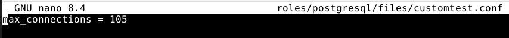
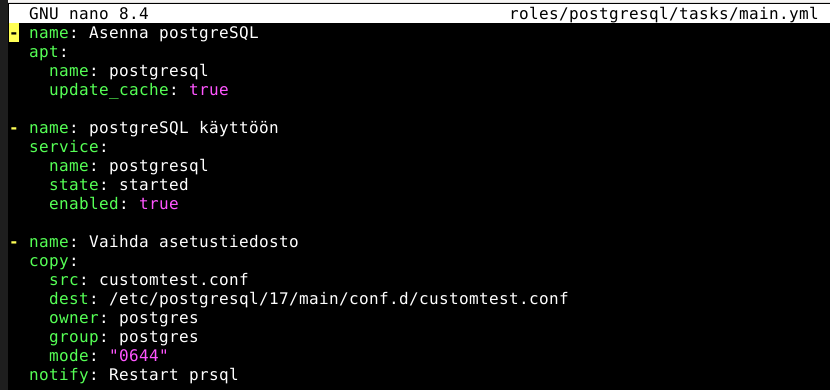
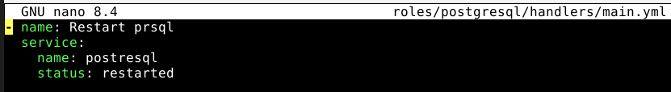
Ja koeajo ensin testrun - ryhmän hosteilla:
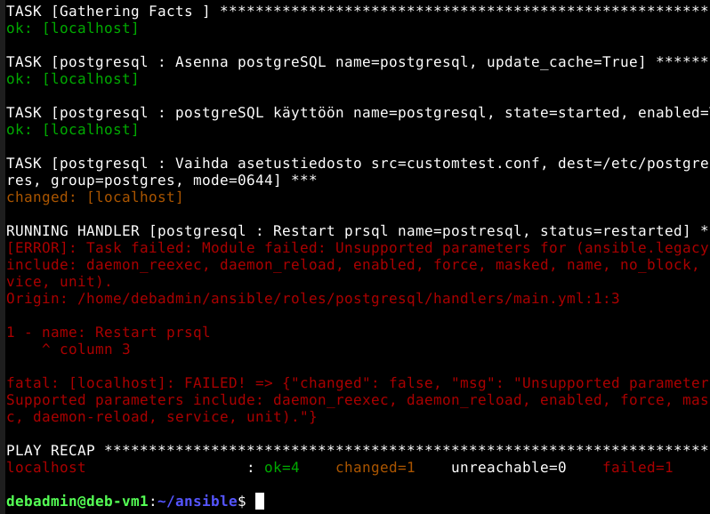
Virhettä pukkasi. Kävin tutkailemassa handlers/main.yml - tiedostoa, josta paljastui pari kirjoitusvirhettä. Ne korjaamalla uusintatestiajo meni läpi onnistuneesti, mutta mikään ei muuttunut (changed=0 -> Handler ei aktivoitunut -> customtest.conf - asetukset eivät astuneet voimaan)
Korjaantui käynnistämällä postgresSQL uudestaan (sudo systemctl restart postgresql)
Ja hakemalla tiedon postgres-komennolla (sudo -u postgres psql -c "SHOW max_connections;")
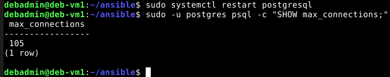
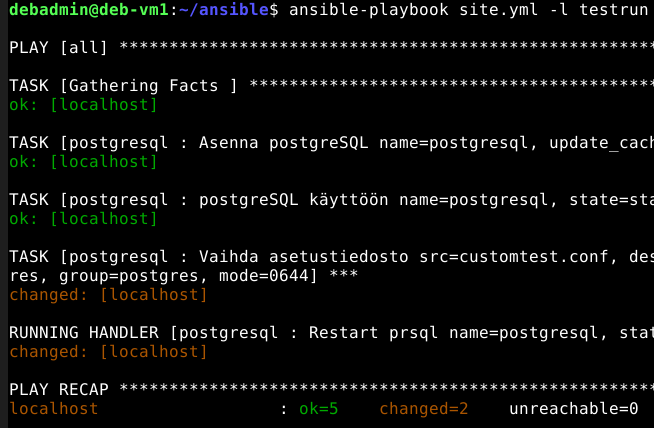
Seuraavaksi poistin koko PostgreSQL - asennuksen (sudo apt purge postgresql postgresql-17 postgresql-client-common postgresql-common-dev postgresql-client-17 postgresql-common), sekä hakemiston rippeet (sudo rm -rf /etc/postgresql/)
Ajettiin tuttu komento uudestaan (ansible-playbook site.yml -l testrun), ja sitten tarkistus (sudo -u postgres psql -c "SHOW max_connections;")
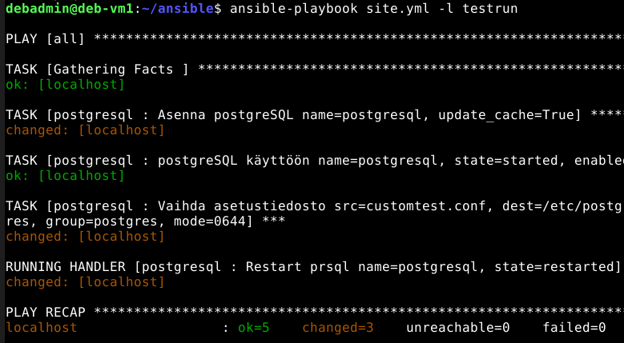
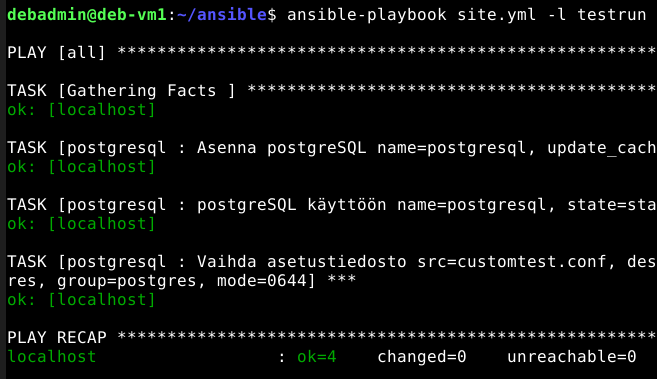
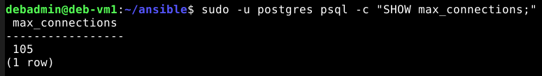
Karvinen, T. 2016 | Install PostgreSQL on Ubuntu - New user and database in 3 commands | Luettavissa: Linkki | Luettu 22.11.26
Karvinen, T. 2016 | PostgreSQL Install and One Table Database - SQL CRUD tutorial for Ubuntu | Luettavissa: Linkki | Luettu 22.11.26